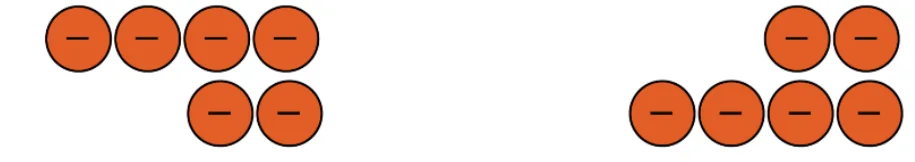
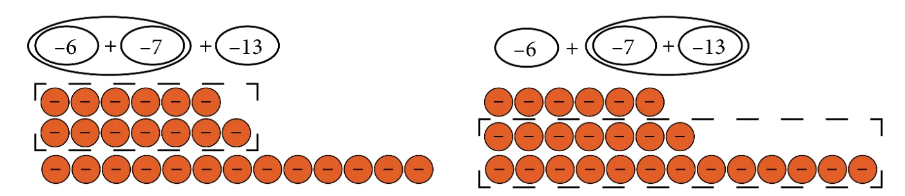
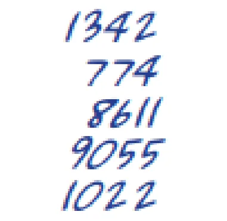

Page No. 24
Choose your favourite number and write as many expressions as you can having that value.
Ans: Let us choose the number 24.
The arithmetic expressions for the number can be as follows:
\(12 + 12 = 24\); \(4 \times 6 = 24\); \(48 \div 2 = 24\); \(34 - 10 = 24\); \(20 + 4 = 24\) etc.
Now you choose your number and form arithmetic expressions for that number.
Page No. 25 — Figure it Out
- Fill in the blanks to make the expressions equal on both sides of the = sign:
- \(13 + 4 =\) ____ \(+ 6\)
- \(22 +\) ____ \(= 6 \times 5\)
- \(8 \times\) ____ \(= 64 \div 2\)
- \(34 -\) ____ \(= 25\)
Ans: (a) 11 (b) 8 (c) 4 (d) 9
- Arrange the following expressions in ascending (increasing) order of their values.
- \(67 - 19\)
- \(67 - 20\)
- \(35 + 25\)
- \(5 \times 11\)
- \(120 \div 3\)
Ans: \(120 \div 3 < 67 - 20 < 67 - 19 < 5 \times 11 < 35 + 25\)
Page No. 26
Use ‘>’ or ‘<’ or ‘=’ in each of the following expressions to compare them. Can you do it without complicated calculations? Explain your thinking in each case.
Ans: (a) > (b) = (c) < (d) < (e) <
Page No. 28–29
Check if replacing subtraction by addition in this way does not change the value of the expression, by taking different examples.
Ans: Let us take the numbers 18 and 10.
\(18 - 10 = 8\) and \(18 + (-10) = 8\)
Can you explain why subtracting a number is the same as adding its inverse, using the Token Model of integers that we saw in the Class 6 textbook of mathematics?
Ans: Refer chapter 10 of class VI Mathematics Textbook.
Does changing the order in which the terms are added give different values?
Ans: No. For example, \(14 + 10 + (-5) = 19\) or \((-5) + 10 + 14 = 19\)
Page No. 29
Will this also hold when there are terms having negative numbers as well? Take some more expressions and check.
Ans: Yes.
For example: \((-4) + (-2) = -6\) or \((-2) + (-4) = -6\)
\((-6) + (-8) = -14\) or \((-8) + (-6) = -14\)
Write some more examples.
Page No. 30
Can you explain why this is happening using the Token Model of integers that we saw in the Class 6 textbook of mathematics?
Ans:
\((-4) + (-2) = -6\) or \((-2) + (-4) = -6\)

Will this also hold when there are terms having negative numbers as well? Take some more expressions and check.
Ans: Yes
For example,
\((-6) + (-7) + (-13)\)
\(= ((-6) + (-7)) + (-13)\)
\(= (-13) + (-13)\)
\(= -26\)
Other way
\((-6) + (-7) + (-13)\)
\(= (-6) + ((-7) + (-13))\)
\(= (-6) + (-20)\)
\(= -26\)
Can you explain why this is happening using the Token Model of integers that we saw in the Class 6 textbook of mathematics?
Ans: Yes.
Consider the expression: \(-6 + (-7) + (-13)\)

Page No. 31
Does adding the terms of an expression in any order give the same value? Take some more expressions and check. Consider expressions with more than 3 terms also.
Ans: Yes, adding the terms of an expression in any order gives the same value.
Consider an expression with 3 terms: \(9 + 4 + 6\)
Order 1: \(9 + 4 + 6 = (9 + 4) + 6 = 13 + 6 = 19\)
Order 2: \(9 + 4 + 6 = 9 + (4 + 6) = 9 + 10 = 19\)
An expression with 4 terms (including a negative number).
Consider the expression: \(15 + (-8) + 5 + 12\)
Order 1: \((15 + (-8)) + 5 + 12 = (7 + 5) + 12 = 12 + 12 = 24\)
Order 2: \(15 + 5 + 12 + (-8) = (15 + 5 + 12) + (-8)\)
\(= ((15 + 5) + 12) + (-8) = (20 + 12) + (-8) = 32 + (-8) = 24\)
Manasa is adding a long list of numbers. It took her five minutes to add them all and she got the answer 11749. Then she realised that she had forgotten to include the fourth number 9055. Does she have to start all over again?

Ans: No, she can add the fourth number, 9055 to the sum she got (11749) to get the correct sum of the list of given numbers. That is \(11749 + 9055 = 20804\) (Using Associative Property).
Page No. 32
If the total number of friends goes up to 7 and the tip remains the same, how much will they have to pay? Write an expression for this situation and identify its terms.
Ans: The expression for the total cost \(= 7 \times 23 + 5 = 161 + 5 =\) ₹166.
The terms in the expression \(7 \times 23 + 5\) are \(7 \times 23\), 5.
Page No. 33
For each of the cases below, write the expression and identify its terms:
- If the teacher had called out ‘4’, Ruby would write ________
- If the teacher had called out ‘7’, Ruby would write ________
Write an expression like the above for your class size.
Ans:
- \(8 \times 4 + 1\)
Terms: \(8 \times 4\), 1 - \(4 \times 7 + 5\)
Terms: \(4 \times 7\), 5
Identify the terms in the two expressions above.
Ans:
Way 1: \(432 = 4 \times 100 + 1 \times 20 + 1 \times 10 + 2 \times 1\)
Terms: \(4 \times 100\), \(1 \times 20\), \(1 \times 10\), and \(2 \times 1\)
Way 2: \(432 = 8 \times 50 + 1 \times 10 + 4 \times 5 + 2 \times 1\)
Terms: \(8 \times 50\), \(1 \times 10\), \(4 \times 5\), and \(2 \times 1\)
Can you think of some more ways of giving ₹432 to someone?
Ans: \(40 \times 10 + 3 \times 10 + 2 \times 1\)
Terms: \(40 \times 10\), \(3 \times 10\) and \(2 \times 1\). Try for some more expressions.